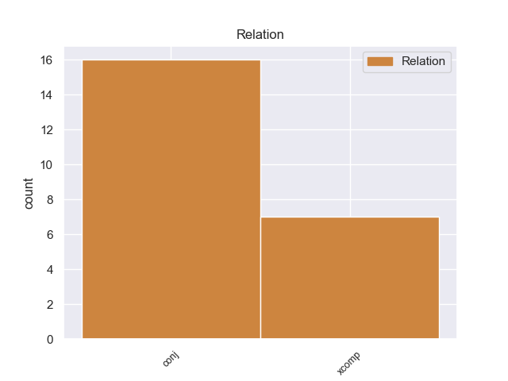
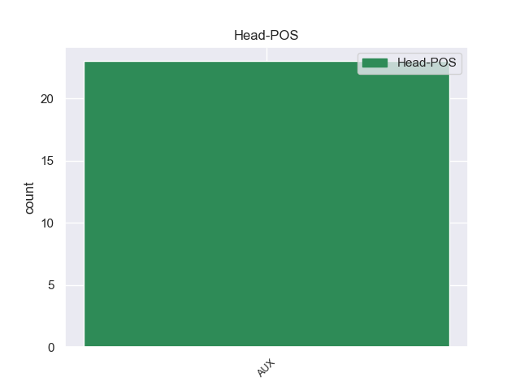
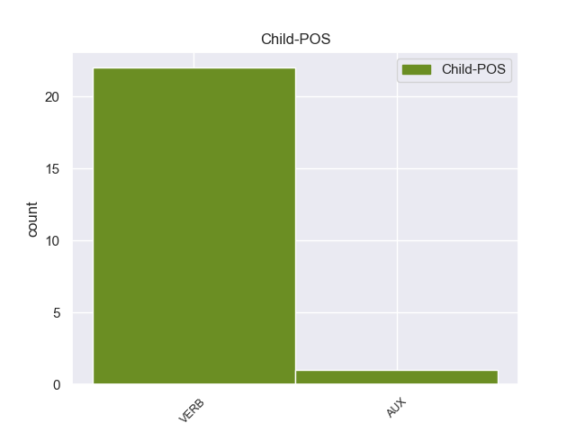

Distribution of features within this leaf



Agreement Rules sorted by frequency.
- When the dependent token is the conjunct(conj) of the head token, and the head token is AUX
1 " _ _ _ _ 0 _ _ _
2 Los _ _ _ _ 0 _ _ _
3 fanáticos _ _ _ _ 0 _ _ _
4 van vaber AUX _ Mood=Ind|Number=Sing|Person=3|Tense=Pres|VerbForm=Fin 0 _ _ _
5 a _ _ _ _ 0 _ _ _
6 poder _ _ _ _ 0 _ _ _
7 seguir _ _ _ _ 0 _ _ _
8 a _ _ _ _ 0 _ _ _
9 sus _ _ _ _ 0 _ _ _
10 equipos _ _ _ _ 0 _ _ _
11 en _ _ _ _ 0 _ _ _
12 20 _ _ _ _ 0 _ _ _
13 o _ _ _ _ 0 _ _ _
14 30 _ _ _ _ 0 _ _ _
15 kilómetros _ _ _ _ 0 _ _ _
16 " _ _ _ _ 0 _ _ _
17 , _ _ _ _ 0 _ _ _
18 contó contó VERB _ Mood=Ind|Number=Sing|Person=3|Tense=Pres|VerbForm=Fin 4 conj _ _
19 ' _ _ _ _ 0 _ _ _
20 Batigol _ _ _ _ 0 _ _ _
21 ' _ _ _ _ 0 _ _ _
22 en _ _ _ _ 0 _ _ _
23 declaraciones _ _ _ _ 0 _ _ _
24 periodísticas _ _ _ _ 0 _ _ _
25 . _ _ _ _ 0 _ _ _
1 Las _ _ _ _ 0 _ _ _
2 batallas _ _ _ _ 0 _ _ _
3 son sar AUX _ Mood=Ind|Number=Plur|Person=3|Tense=Pres|VerbForm=Fin 0 _ _ _
4 por _ _ _ _ 0 _ _ _
5 turnos _ _ _ _ 0 _ _ _
6 y _ _ _ _ 0 _ _ _
7 continúan continúar VERB _ Mood=Ind|Number=Plur|Person=3|Tense=Pres|VerbForm=Fin 3 xcomp _ _
8 hasta _ _ _ _ 0 _ _ _
9 que _ _ _ _ 0 _ _ _
10 alguno _ _ _ _ 0 _ _ _
11 de _ _ _ _ 0 _ _ _
12 los _ _ _ _ 0 _ _ _
13 contrincantes _ _ _ _ 0 _ _ _
14 escapan _ _ _ _ 0 _ _ _
15 o _ _ _ _ 0 _ _ _
16 son _ _ _ _ 0 _ _ _
17 derrotados _ _ _ _ 0 _ _ _
18 . _ _ _ _ 0 _ _ _
Disagree Examples:
1 Asumieron _ _ _ _ 0 _ _ _
2 que _ _ _ _ 0 _ _ _
3 la _ _ _ _ 0 _ _ _
4 mayoría _ _ _ _ 0 _ _ _
5 de _ _ _ _ 0 _ _ _
6 las _ _ _ _ 0 _ _ _
7 visitas _ _ _ _ 0 _ _ _
8 eran ser AUX _ Mood=Ind|Number=Plur|Person=3|Tense=Imp|VerbForm=Fin 0 _ _ _
9 de _ _ _ _ 0 _ _ _
10 empleados _ _ _ _ 0 _ _ _
11 más _ _ _ _ 0 _ _ _
12 que _ _ _ _ 0 _ _ _
13 de _ _ _ _ 0 _ _ _
14 ejecutivos _ _ _ _ 0 _ _ _
15 y _ _ _ _ 0 _ _ _
16 esperaban esperabaar VERB _ Mood=Ind|Number=Sing|Person=3|Tense=Past|VerbForm=Fin 8 conj _ _
17 que _ _ _ _ 0 _ _ _
18 la _ _ _ _ 0 _ _ _
19 compañía _ _ _ _ 0 _ _ _
20 viera _ _ _ _ 0 _ _ _
21 el _ _ _ _ 0 _ _ _
22 demo _ _ _ _ 0 _ _ _
23 como _ _ _ _ 0 _ _ _
24 ellos _ _ _ _ 0 _ _ _
25 lo _ _ _ _ 0 _ _ _
26 veían _ _ _ _ 0 _ _ _
27 , _ _ _ _ 0 _ _ _
28 un _ _ _ _ 0 _ _ _
29 tributo _ _ _ _ 0 _ _ _
30 a _ _ _ _ 0 _ _ _
31 Chrono _ _ _ _ 0 _ _ _
32 Trigger _ _ _ _ 0 _ _ _
33 , _ _ _ _ 0 _ _ _
34 y _ _ _ _ 0 _ _ _
35 no _ _ _ _ 0 _ _ _
36 un _ _ _ _ 0 _ _ _
37 reemplazo _ _ _ _ 0 _ _ _
38 . _ _ _ _ 0 _ _ _
1 De _ _ _ _ 0 _ _ _
2 los _ _ _ _ 0 _ _ _
3 522 _ _ _ _ 0 _ _ _
4 habitantes _ _ _ _ 0 _ _ _
5 , _ _ _ _ 0 _ _ _
6 el _ _ _ _ 0 _ _ _
7 municipio _ _ _ _ 0 _ _ _
8 de _ _ _ _ 0 _ _ _
9 Cawker _ _ _ _ 0 _ _ _
10 estaba _ _ _ _ 0 _ _ _
11 compuesto _ _ _ _ 0 _ _ _
12 por _ _ _ _ 0 _ _ _
13 el _ _ _ _ 0 _ _ _
14 97.32 _ _ _ _ 0 _ _ _
15 % _ _ _ _ 0 _ _ _
16 blancos _ _ _ _ 0 _ _ _
17 , _ _ _ _ 0 _ _ _
18 el _ _ _ _ 0 _ _ _
19 0.19 _ _ _ _ 0 _ _ _
20 % _ _ _ _ 0 _ _ _
21 eran _ _ _ _ 0 _ _ _
22 afroamericanos _ _ _ _ 0 _ _ _
23 , _ _ _ _ 0 _ _ _
24 el _ _ _ _ 0 _ _ _
25 0 _ _ _ _ 0 _ _ _
26 % _ _ _ _ 0 _ _ _
27 eran _ _ _ _ 0 _ _ _
28 amerindios _ _ _ _ 0 _ _ _
29 , _ _ _ _ 0 _ _ _
30 el _ _ _ _ 0 _ _ _
31 0.19 _ _ _ _ 0 _ _ _
32 % _ _ _ _ 0 _ _ _
33 eran _ _ _ _ 0 _ _ _
34 asiáticos _ _ _ _ 0 _ _ _
35 , _ _ _ _ 0 _ _ _
36 el _ _ _ _ 0 _ _ _
37 0 _ _ _ _ 0 _ _ _
38 % _ _ _ _ 0 _ _ _
39 eran _ _ _ _ 0 _ _ _
40 isleños _ _ _ _ 0 _ _ _
41 de _ _ _ _ 0 _ _ _
42 el _ _ _ _ 0 _ _ _
43 Pacífico _ _ _ _ 0 _ _ _
44 , _ _ _ _ 0 _ _ _
45 el _ _ _ _ 0 _ _ _
46 0.77 _ _ _ _ 0 _ _ _
47 % _ _ _ _ 0 _ _ _
48 eran sera AUX _ Mood=Ind|Number=Plur|Person=3|Tense=Imp|VerbForm=Fin 0 _ _ _
49 de _ _ _ _ 0 _ _ _
50 otras _ _ _ _ 0 _ _ _
51 razas _ _ _ _ 0 _ _ _
52 y _ _ _ _ 0 _ _ _
53 el _ _ _ _ 0 _ _ _
54 1.53 _ _ _ _ 0 _ _ _
55 % _ _ _ _ 0 _ _ _
56 pertenecían pertenecían VERB _ Mood=Ind|Number=Sing|Person=3|Tense=Pres|VerbForm=Fin 48 conj _ _
57 a _ _ _ _ 0 _ _ _
58 dos _ _ _ _ 0 _ _ _
59 o _ _ _ _ 0 _ _ _
60 más _ _ _ _ 0 _ _ _
61 razas _ _ _ _ 0 _ _ _
62 . _ _ _ _ 0 _ _ _
1 De _ _ _ _ 0 _ _ _
2 los _ _ _ _ 0 _ _ _
3 1036 _ _ _ _ 0 _ _ _
4 habitantes _ _ _ _ 0 _ _ _
5 , _ _ _ _ 0 _ _ _
6 el _ _ _ _ 0 _ _ _
7 municipio _ _ _ _ 0 _ _ _
8 de _ _ _ _ 0 _ _ _
9 Long _ _ _ _ 0 _ _ _
10 Lake _ _ _ _ 0 _ _ _
11 estaba _ _ _ _ 0 _ _ _
12 compuesto _ _ _ _ 0 _ _ _
13 por _ _ _ _ 0 _ _ _
14 el _ _ _ _ 0 _ _ _
15 98.07 _ _ _ _ 0 _ _ _
16 % _ _ _ _ 0 _ _ _
17 blancos _ _ _ _ 0 _ _ _
18 , _ _ _ _ 0 _ _ _
19 el _ _ _ _ 0 _ _ _
20 0.29 _ _ _ _ 0 _ _ _
21 % _ _ _ _ 0 _ _ _
22 eran _ _ _ _ 0 _ _ _
23 afroamericanos _ _ _ _ 0 _ _ _
24 , _ _ _ _ 0 _ _ _
25 el _ _ _ _ 0 _ _ _
26 0.48 _ _ _ _ 0 _ _ _
27 % _ _ _ _ 0 _ _ _
28 eran _ _ _ _ 0 _ _ _
29 amerindios _ _ _ _ 0 _ _ _
30 , _ _ _ _ 0 _ _ _
31 el _ _ _ _ 0 _ _ _
32 0.29 _ _ _ _ 0 _ _ _
33 % _ _ _ _ 0 _ _ _
34 eran _ _ _ _ 0 _ _ _
35 asiáticos _ _ _ _ 0 _ _ _
36 , _ _ _ _ 0 _ _ _
37 el _ _ _ _ 0 _ _ _
38 0 _ _ _ _ 0 _ _ _
39 % _ _ _ _ 0 _ _ _
40 eran _ _ _ _ 0 _ _ _
41 isleños _ _ _ _ 0 _ _ _
42 de _ _ _ _ 0 _ _ _
43 el _ _ _ _ 0 _ _ _
44 Pacífico _ _ _ _ 0 _ _ _
45 , _ _ _ _ 0 _ _ _
46 el _ _ _ _ 0 _ _ _
47 0.1 _ _ _ _ 0 _ _ _
48 % _ _ _ _ 0 _ _ _
49 eran ser AUX _ Mood=Ind|Number=Plur|Person=3|Tense=Imp|VerbForm=Fin 0 _ _ _
50 de _ _ _ _ 0 _ _ _
51 otras _ _ _ _ 0 _ _ _
52 razas _ _ _ _ 0 _ _ _
53 y _ _ _ _ 0 _ _ _
54 el _ _ _ _ 0 _ _ _
55 0.77 _ _ _ _ 0 _ _ _
56 % _ _ _ _ 0 _ _ _
57 pertenecían pertenecían VERB _ Mood=Ind|Number=Sing|Person=3|Tense=Pres|VerbForm=Fin 49 conj _ _
58 a _ _ _ _ 0 _ _ _
59 dos _ _ _ _ 0 _ _ _
60 o _ _ _ _ 0 _ _ _
61 más _ _ _ _ 0 _ _ _
62 razas _ _ _ _ 0 _ _ _
63 . _ _ _ _ 0 _ _ _
1 El _ _ _ _ 0 _ _ _
2 reverso _ _ _ _ 0 _ _ _
3 será será AUX _ Mood=Ind|Number=Sing|Person=3|Tense=Pres|VerbForm=Fin 0 _ _ _
4 de _ _ _ _ 0 _ _ _
5 análoga _ _ _ _ 0 _ _ _
6 factura _ _ _ _ 0 _ _ _
7 , _ _ _ _ 0 _ _ _
8 ostentará ostentará VERB _ Mood=Ind|Number=Sing|Person=3|Tense=Past|VerbForm=Fin 3 xcomp _ _
9 dentro _ _ _ _ 0 _ _ _
10 de _ _ _ _ 0 _ _ _
11 el _ _ _ _ 0 _ _ _
12 óvalo _ _ _ _ 0 _ _ _
13 el _ _ _ _ 0 _ _ _
14 emblema _ _ _ _ 0 _ _ _
15 de _ _ _ _ 0 _ _ _
16 el _ _ _ _ 0 _ _ _
17 Ejército _ _ _ _ 0 _ _ _
18 de _ _ _ _ 0 _ _ _
19 Tierra _ _ _ _ 0 _ _ _
20 , _ _ _ _ 0 _ _ _
21 proporcionado _ _ _ _ 0 _ _ _
22 a _ _ _ _ 0 _ _ _
23 las _ _ _ _ 0 _ _ _
24 dimensiones _ _ _ _ 0 _ _ _
25 de _ _ _ _ 0 _ _ _
26 el _ _ _ _ 0 _ _ _
27 óvalo _ _ _ _ 0 _ _ _
28 . _ _ _ _ 0 _ _ _
1 Esto _ _ _ _ 0 _ _ _
2 último _ _ _ _ 0 _ _ _
3 no _ _ _ _ 0 _ _ _
4 fue ser AUX _ Mood=Ind|Number=Sing|Person=3|Tense=Pres|VerbForm=Fin 0 _ _ _
5 de _ _ _ _ 0 _ _ _
6 el _ _ _ _ 0 _ _ _
7 agrado _ _ _ _ 0 _ _ _
8 de _ _ _ _ 0 _ _ _
9 Rey _ _ _ _ 0 _ _ _
10 Enrique _ _ _ _ 0 _ _ _
11 II _ _ _ _ 0 _ _ _
12 de _ _ _ _ 0 _ _ _
13 Inglaterra _ _ _ _ 0 _ _ _
14 , _ _ _ _ 0 _ _ _
15 quién _ _ _ _ 0 _ _ _
16 , _ _ _ _ 0 _ _ _
17 ante _ _ _ _ 0 _ _ _
18 la _ _ _ _ 0 _ _ _
19 posibilidad _ _ _ _ 0 _ _ _
20 de _ _ _ _ 0 _ _ _
21 la _ _ _ _ 0 _ _ _
22 creación _ _ _ _ 0 _ _ _
23 de _ _ _ _ 0 _ _ _
24 un _ _ _ _ 0 _ _ _
25 estado _ _ _ _ 0 _ _ _
26 normando _ _ _ _ 0 _ _ _
27 rival _ _ _ _ 0 _ _ _
28 en _ _ _ _ 0 _ _ _
29 Irlanda _ _ _ _ 0 _ _ _
30 se _ _ _ _ 0 _ _ _
31 apresuró apresuró VERB _ Mood=Ind|Number=Sing|Person=3|Tense=Past|VerbForm=Fin 4 conj _ _
32 a _ _ _ _ 0 _ _ _
33 visitar _ _ _ _ 0 _ _ _
34 Leinster _ _ _ _ 0 _ _ _
35 y _ _ _ _ 0 _ _ _
36 establecer _ _ _ _ 0 _ _ _
37 su _ _ _ _ 0 _ _ _
38 autoridad _ _ _ _ 0 _ _ _
39 . _ _ _ _ 0 _ _ _